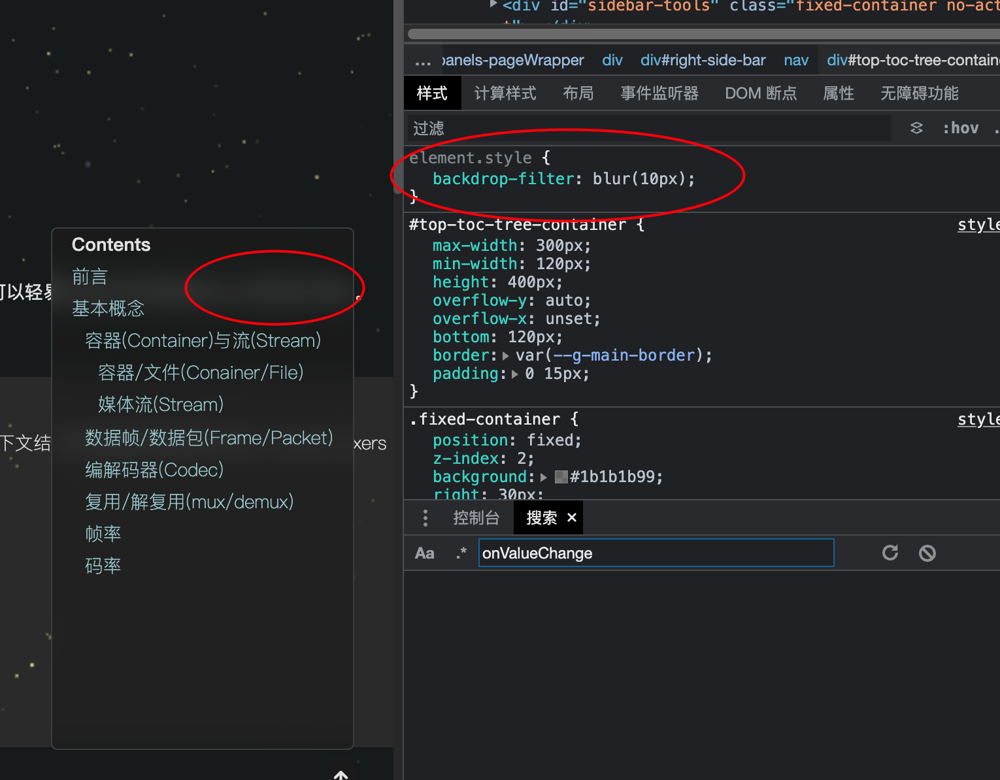

2023-07-20
backdrop-filter
修改于: 2023-07-20- 相关属性
- filter , 与它的区别是 filter 作用于整个元素, 而 backdrop-filter 作用于背景
与 :filter 类似, 都可以设置模糊, 不过这个是设置的元素外部的遮盖层模糊. 即为元素后面的(背景)应用图形效果, 如模糊、色彩偏移或其他图像处理滤镜
- 模糊背景:
创建毛玻璃效果。
只对弹出层生效, 设置到最底层元素不生效
例如: backdrop-filter: blur(10px);
当不设置模糊时可以看到后面遮挡的文字
设置模糊后就模糊背景遮挡了后面的文件
- 颜色偏移:
- 创建色彩偏移效果。 例如: backdrop-filter: hue-rotate(45deg);
- 灰度、饱和度、对比度等调整:
调整背景区域的视觉效果。
- 灰度
- 例如: backdrop-filter: grayscale(50%) sepia(30%);
- 饱和度
类似ps饱和度效果， <100% 变暗， >100% 变亮
例如: backdrop-filter: saturate(200%);
- 对比度
类似ps对比度， 100% 为原图， 0% 为全灰色图像
例如: backdrop-filter: contrast(200%);
- 组合多种滤镜:
- 组合使用多种滤镜效果。 例如: backdrop-filter: blur(10px) brightness(80%);